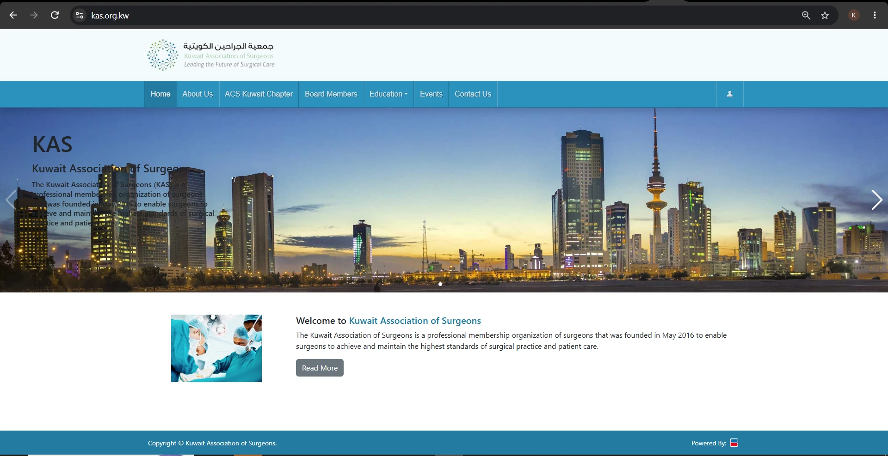

Public association site
The founding statement, the board, the ACS Kuwait Chapter, education, and every conference — presented with the association's own identity.
A national surgical association in one system — a public website for the board, the ACS Kuwait Chapter, education and conferences, plus a membership admin portal that runs subscriptions in KWD, verifies documents, and issues event certificates.

The Kuwait Association of Surgeons (KAS) is a professional membership organization of surgeons, founded in May 2016 to help its members achieve and maintain the highest standards of surgical practice and patient care. The platform has two faces: a public website that represents the association, and an admin portal where the team manages members, money, documents, and events.
The public site carries the association's identity — the Kuwait skyline banner, the founding statement, the board, the ACS Kuwait Chapter, education, and the conference calendar. The admin portal is the operational side: at the time of capture it held 428 members and 619 total users, with 385 pending profiles awaiting verification, 292 pending invoices, 12 active subscriptions, and 270.00 KWD in total revenue.
I built the platform end to end — the public association website, the membership admin portal, and the API that serves the member mobile app.
The founding statement, the board, the ACS Kuwait Chapter, education, and every conference — presented with the association's own identity.
Members, profiles, documents, and devices in one place, with the current registration step visible on every pending profile.
Active, expired, and expiring-soon subscriptions with expiry dates, days remaining, origin, reference number, and 292 invoices to reconcile.
Civil ID and criminal status certificates verified one by one — 127 documents tracked across approved, pending, and rejected states.
Doctors request proof of attendance for a course or conference; admins filter by status and date, assign an owner, and issue it.
Revenue by month, cumulative user growth, churn rate, document status, and a 14-day notification trend with webhook and scheduler checks.
Click any screenshot to open it at full size. Use the arrow keys to move between images.
A membership system with money, identity documents, and medical records attached — so the data model, permissions, and audit trail matter more than the screens on top.
Architecture: one Laravel application serves the public site, the admin portal, and the mobile API. Members, documents, devices, subscriptions, invoices, events, and certificates share a single schema, so a verified document immediately unblocks a subscription, and an attended event immediately qualifies a certificate request. Reports read from the same tables the operators work in, which is why the dashboard numbers and the analytics charts always agree.
The association runs on one platform instead of a website plus spreadsheets plus a mailbox. Membership, payment, verification, and certification are four states of the same record: 428 members, 619 users, 292 invoices to reconcile, and 127 documents to verify are all visible and filterable from the same admin portal.
The reports turn that operational data into decisions — where revenue comes from month to month, how many members churn, which document types are stuck in review, and whether the notification pipeline is healthy. And because the member app reads the same API, the membership card in a surgeon's phone is always the current one.